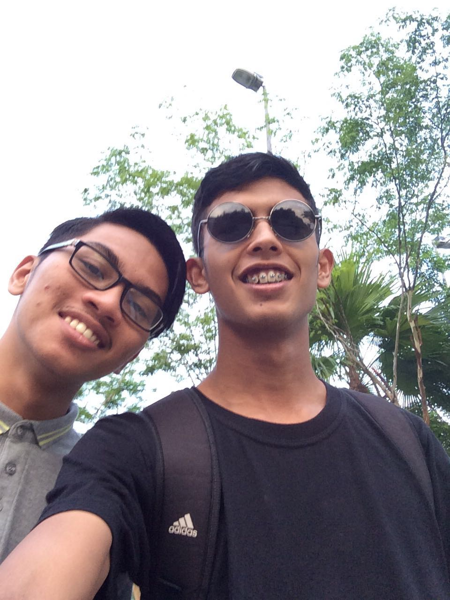

My Father Father
I Have a simple and happy family.
My forever hero, walid. His name is Izzat Ullah Sheikh.
Brother
My Mother
My Brother
(but Allah love you more. -Al-fatihah walid)(29/3) We will see you soon in paradise
My mum's name is Rohani Othman. She work as chief librarian at Universiti Sultan Zainal Abidin.
My mother is the most important person in my life. I have been mentioning her in almost all of the essays I write. The problem is,
I cannot really express how I feel about her in just words. My mother is not my whole life, but she is a really big part of it.
My whole world does not only revolve around her, but she is the most influential person who inspires me. My mother is not just another woman.
She is extraordinary.
I have known her for almost 22 years, I know her very well,
and I had learned to love her since the day we first met. Relatives always tell me stories about my birth.
They tell me how important I was to my mom. I was the foundation of her joy, strength, peace and love. She has never lied to me about my father.
I do not remember asking about him. Ever since, I already knew he was in a better place. I do not remember my mom having a hard time explaining
to me my situation "having no father, Allah love him more". She was always straightforward. She explained things very simply, like she knew everything.
I thank her for being simple.
She has taught me all I need to know to live life as a 21year old teenage girl. She taught me how to feel. Well, she did not only do that.
She showed me how to handle these feelings of anger, fear, guilt, joy, sadness, excitement, hate and anxiety. She also showed me how to give and take.
I learned from her that giving is a lot harder than taking, but the former is much more satisfying when it is done. She told me that giving makes one happy.

The hero in my life would have to be my brother. His name is Aiman and he is 19years old. He study in mechanical engineering at UiTM Bukit Besi.
My brother is my hero because of a number of reasons such as: he's helpful, fun, I can trust him with just about anything,
he knows about things, but I only have limited time with him and we do have some differences.
Aiman is helpful in ways on how to deal with my problems. He says he had the same ones so I should listen to him about those kind of things.
He helps me out when I have problems with my freiends, Aiman gives me great advise on some things to.
I love you adik!